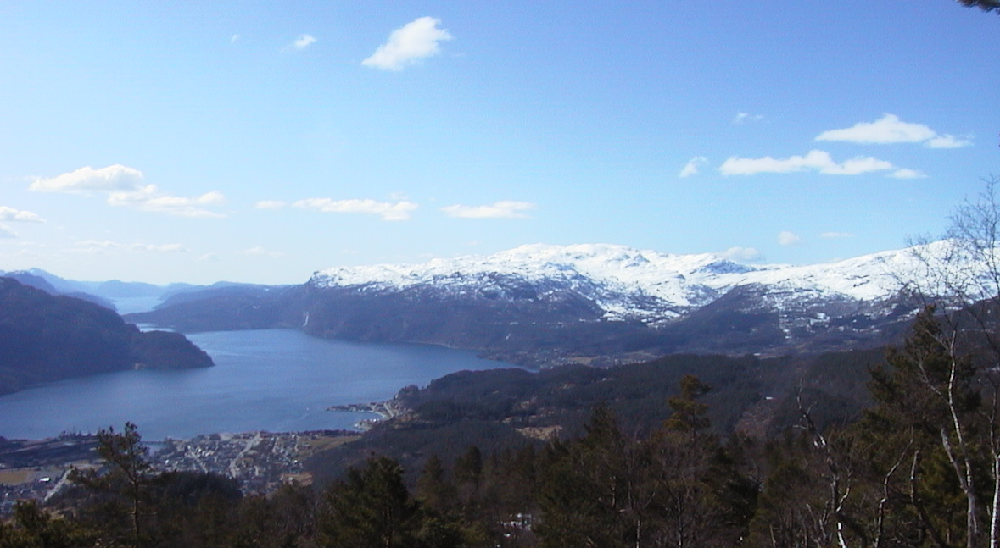
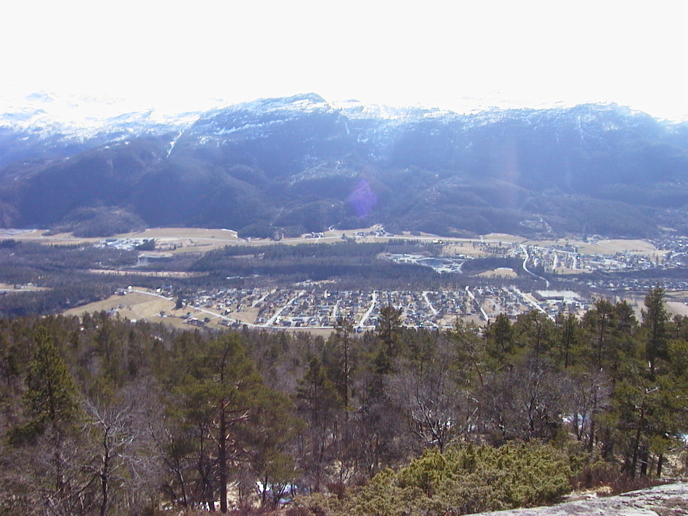
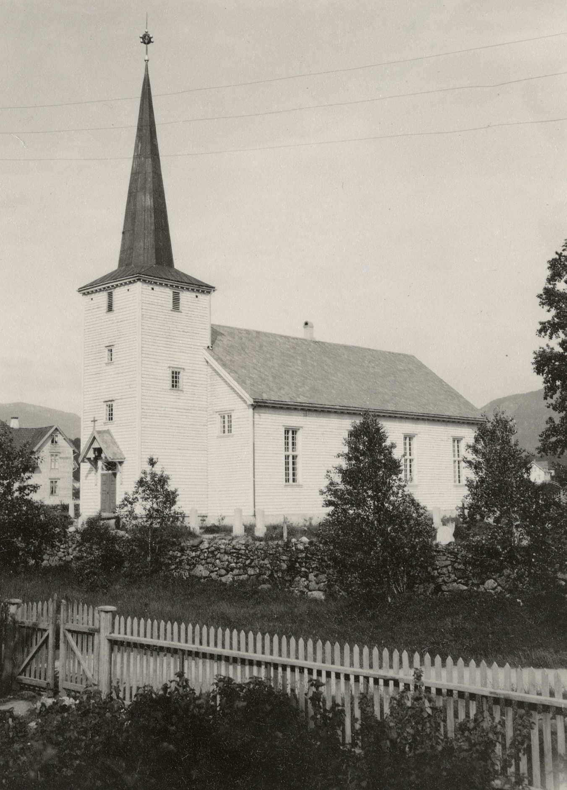
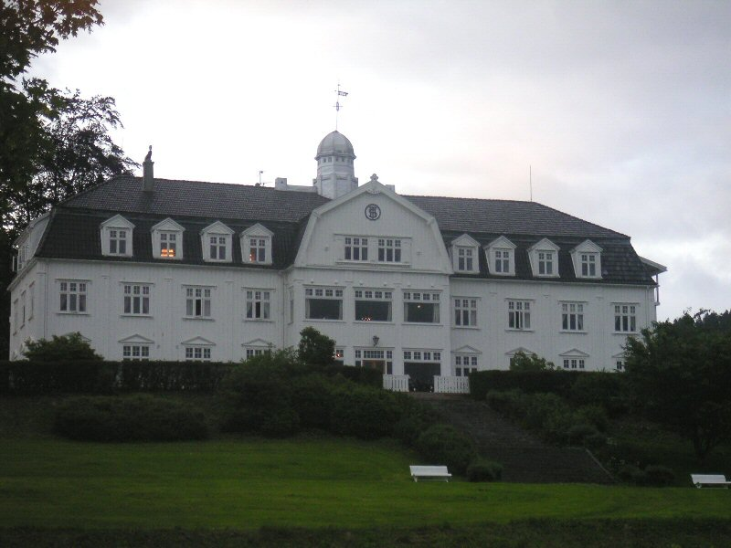
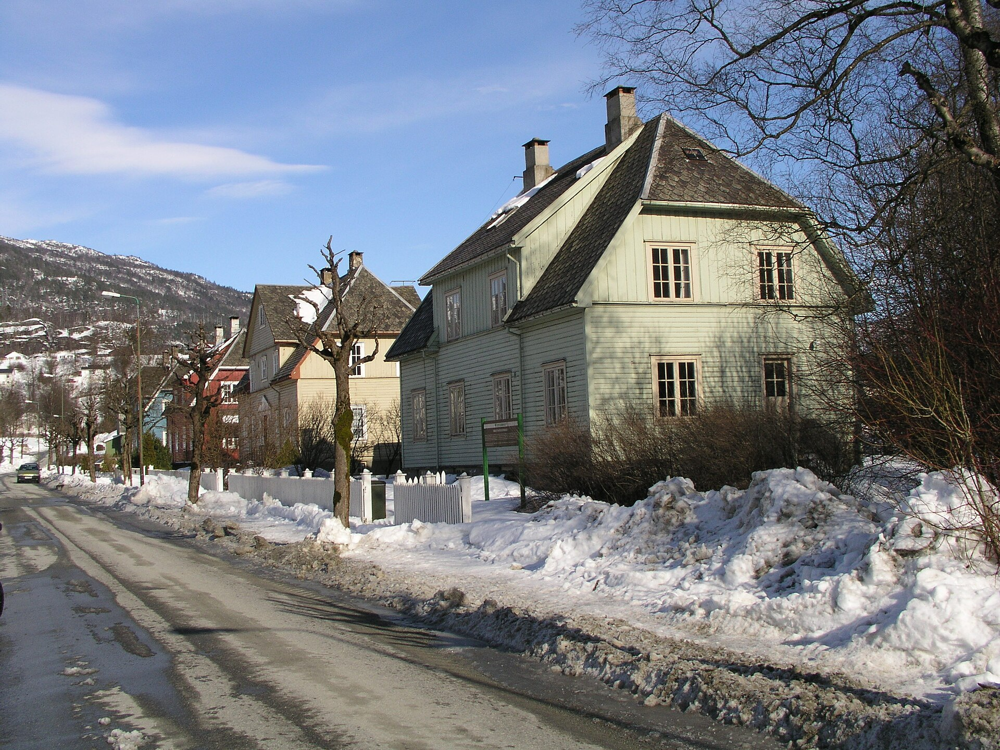
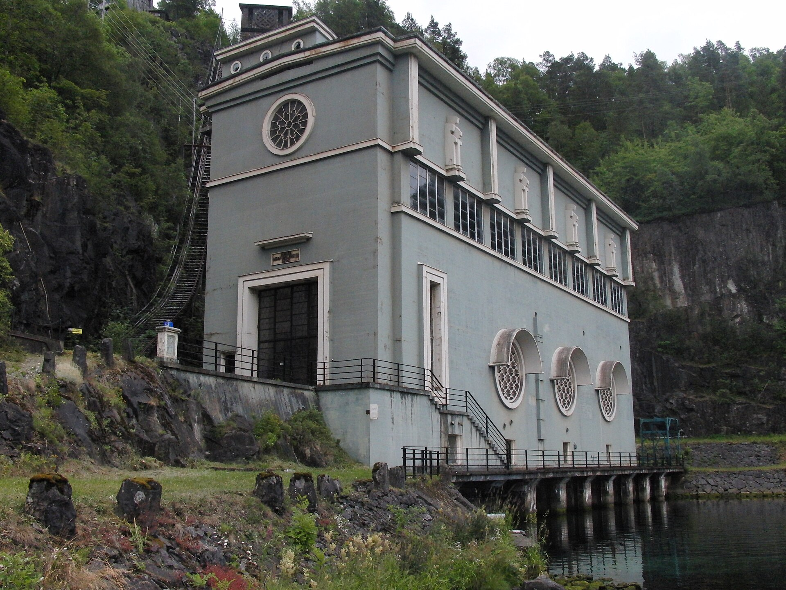
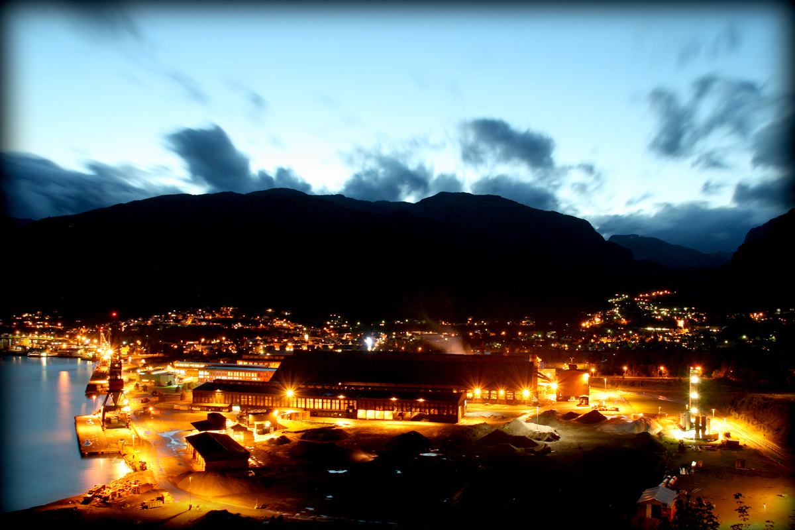
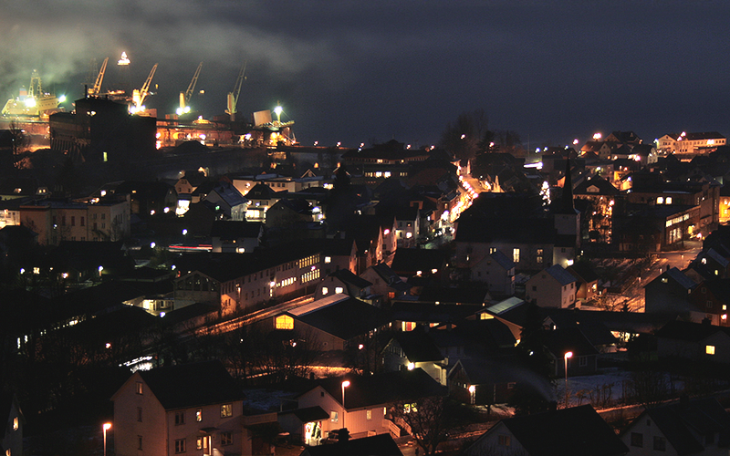
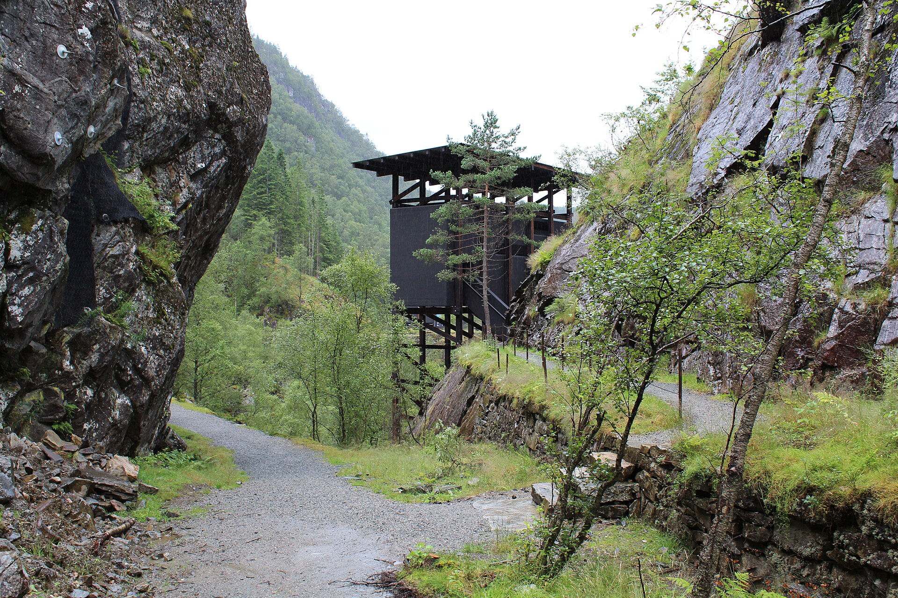
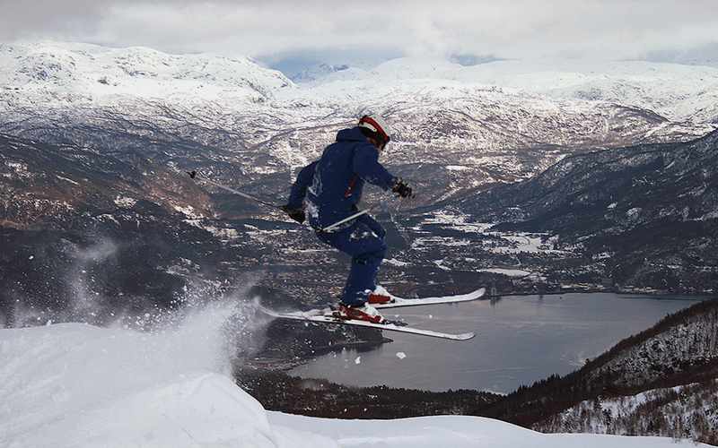

Rogaland · Ryfylke
Sauda
Innerst i en smal fjordarm ligger en by som ble til av fossekraft, sinkmalm og smelteovner. Rull nedover. Året skifter underveis.
Start i 1842Utsikt mot Saudafjorden, 2006. Foto: Neitakk, Free Art License.

1842
Egen kommune
I 1842 ble Sauda skilt ut fra Suldal og ble egen kommune. Den het først Saude. Skriveformen ble senere endret til Sauda. Grensene har ligget i ro siden.
Innerst i Saudafjorden levde folk av jordbruk, skog og tømmerhandel. Fossefallene rant allerede mot fjorden, men industristedet var ennå ikke reist.

1866
Ny kirke på Fløgstad
Sauda kirke ble vigslet 26. september 1866. Den hvite langkirken i tre er tegnet av Hans Linstow og har plass til rundt 350 mennesker.
Menigheten hadde i 1864 vedtatt å flytte kirkestedet til den større bygda, om lag 3,5 kilometer unna. Den eldre kirken ble revet i 1868. Navnet Sauda fulgte med til det nye stedet.

1881
Sink i Allmannajuvet
12 000 tonn malm
2. oktober 1881 ble det registrert malmfunn i Allmannajuvet, noen kilometer øst for sentrum. Husmannen Gregoirus Hansson Tengesdal fant sinkblende i det trange juvet.
Fra 1882 til 1899 tok Sauda Grubekompani ut om lag 12 000 tonn malm. Den ble kløvet ned til fjorden og skipet ut. På det meste arbeidet 168 personer i gruvene. Da prisen falt, ble driften lagt ned. Havna hadde likevel begynt å vokse, og bygda hadde fått sin første industri.
1913
Fossekraft og amerikansk kapital
AS Saudefaldene ble stiftet i 1913 for å bygge ut Saudavassdraget. Arbeidet startet året etter. I 1915 kom kraftkontrakten med Union Carbide, og strømmen begynte å gå i 1919.
Det amerikanske selskapet ville lage kalsiumkarbid og stiftet Electric Furnace Products Company. Fossen var grunnen til at fabrikken havnet innerst i fjorden. Samme tiår reiste også gjestgiveriet som senere ble Sauda Fjordhotell.

1923
Ovnen tennes
13. juni 1923 ble strømmen slått på i den første ovnen etter at anlegget var bygget om. Karbidmarkedet hadde rast sammen etter første verdenskrig, og fabrikken gikk over til ferrolegeringer.
Folketallet snudde. I 1910 bodde 1 405 mennesker i kommunen. I 1930 var de 4 423. Produksjonen steg fra om lag 2 200 tonn ferrolegeringer i 1923 til 85 000 tonn fem år senere, og fabrikken hadde rundt 650 ansatte i 1930. Året etter tok krisen nesten halvparten av jobbene.

1930
Sauda III
I 1930 kom de to første aggregatene i Sauda III i drift. Vannet falt fra Storlivatnet, og stasjonsbygningen er Norges eneste kraftstasjon i art deco. NVE har senere regnet den som et særlig verdifullt minne fra norsk kraftproduksjon.
Mot slutten av 1930-årene gikk smelteverket over til lukkede ovner, og i 1939 ble Elkems Söderberg-elektrode installert. Kommunen nådde folketoppen i 1962, med 6 283 innbyggere.

1970
Saudastreiken
Fra 2. juni til 3. juli 1970 streiket rundt 240 ovnshusarbeidere ved Electric Furnace Products Company. Konflikten gjaldt lønn og lønnssystem, og den ble organisert utenfor den vanlige avtalen.
Av om lag 740 ansatte ble bare rundt 80 holdt i arbeid. Streiken hadde sterk støtte i bygda, som levde av hjørnesteinsbedriften. Etterpå ble partene enige om en garantert minstebonus.

1981
Fra Union Carbide til Elkem
Elkem tar over
Fram til 1981 eide Union Carbide smelteverket. Det året overtok norske Elkem både fabrikken og Saudefaldene, etter at de tre eldste kraftstasjonene hadde falt tilbake til staten i 1979.
Sauda var fortsatt et industristed, men folketallet hadde begynt å synke fra toppen på 1960-tallet. I 1981 bodde 5 637 mennesker i kommunen.
1998
Bystatus
I 1998 vedtok kommunen selv at Sauda skulle ha bystatus. Tettstedet innerst i fjorden hadde lenge fungert som by, med kirke, skole, industrihavn og forretninger.
Avisen Ryfylke hadde kommet ut her siden 1926. Mye av havneområdet ligger på utfylt land som en gang var fjord.

1999
Eramet kjøper verket
Eramet fra 1999
I 1999 solgte Elkem smelteverket til det franske konsernet Eramet. Anlegget produserer fortsatt manganlegeringer og er, målt i tonn, det største av Eramets tre norske verk.
Malmen kommer utenfra, og det meste av metallet skipes ut igjen. Kraften fra vassdraget er fortsatt grunnen til at ovnene står her.
2016
Juvet åpnes for besøk
I 2016 åpnet besøksanlegget i Allmannajuvet, tegnet av Peter Zumthor, som en del av Nasjonal turistveg Ryfylke. De mørke trebyggene står der sinkgruvene ble drevet fra 1882 til 1899.
Sauda III ble lagt ned i 2008 og ble stående som kraftverksmuseum, med de opprinnelige turbinene i behold.

2026
Sauda i dag
I 2026 har kommunen 4 603 innbyggere. Tettstedet, som henger sammen med Saudasjøen, hadde 4 227 innbyggere ved inngangen til 2025. De fleste bor på et lite område innerst i fjorden, under fjell som når 1 602 meter på Kyrkjenuten.
Eramet driver fortsatt smelteverket. Om vinteren går skitrekket ned mot fjorden. Kommunens målform er nynorsk.
